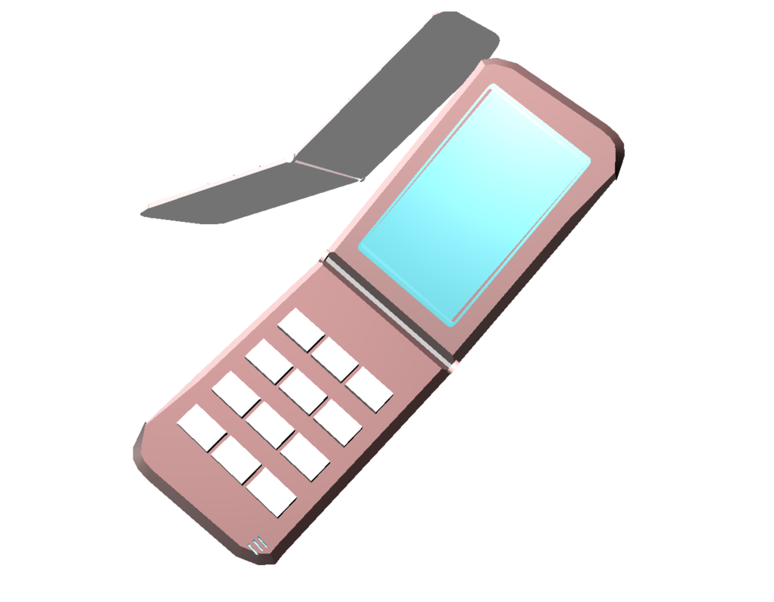

Cellphones have become an indispensable part of our lives, connecting us, providing information, and serving as powerful tools for communication and productivity.
Inventing the cellphone was a groundbreaking achievement that revolutionized communication. It involved the development of a portable, wireless device capable of transmitting voice signals over long distances. Key inventors in this process include Martin Cooper, who made the first mobile call in 1973, and subsequent innovators who improved the technology, leading to the modern smartphones we use today. The cellphone has transformed the way we connect, work, and access information, shaping the modern world in remarkable ways.
Email address: robertmantilla@gmail.com
Social media links: Facebook/Robertmantilla
Copyright: Mantilla Robert C.